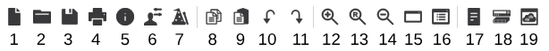

Onglets
De gauche à droite :
- New: Pour créer un nouveau schéma
- Open: Ouvrir un fichier
- Save: Sauvegarder un fichier
- Print: imprimer un fichier
- Network information: Afficher les informations réseau grace a une description détaillée
- Set the mail: Envoyer un mail a un destinataire spécifié avec un sujet et une description
- Open the activity: Ouvrir l'"Activity Wizzard", c'est un outils qui nous permet de créer des scénarios détaillée de réseau pour les utilisateurs
- copy: copier
- paste: coller
- undo: annuler
- redo: rétablir
- zoom in - zoom reset - zoom out: zoomer, réinitialiser, dézoomer -
- view the entire workspace: afficher l'ensemble de l'espace de travail
- view the workspace...tabular.... : afficher l'espace de travail...tabulaire....
- view all command : afficher toutes les commandes
- customise any existing device model with.... : personnaliser tout modèle de périphérique existant avec....
- associate logical workspace... : associer l'espace de travail logique...
De gauche à droite :
- Select: Permet de sélectionner un élément
- inspect: Permet d'inspecter un élément
- Delete: Permet de supprimer un élément
- Resize: Permet de redimensionner un élément
- Place Note: Permet de placer une note
- Draw line: Permet de dessiner une ligne
- Draw Rectangle: Permet de dessiner un rectangle
- Draw Elipse: Permet de dessiner une ellipse
- Draw Free Form: Permet de dessiner une forme libre
- Add Simple PDU: Permet d'ajouter un PDU simple
- Add Complex PDU: Permet d'ajouter un PDU complexe